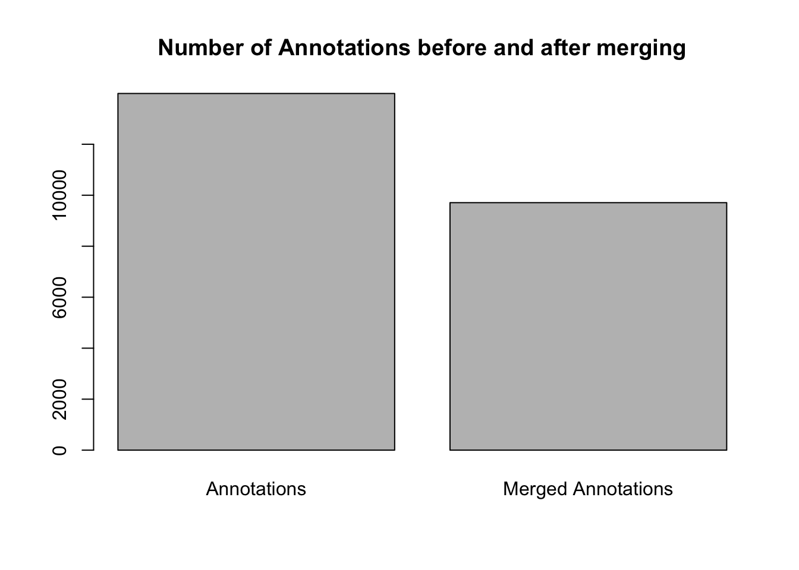

The NHMDE package alongside SonicScrewdriveR can be used to pre-process the [FlyTunes)(https://ebaker.me.uk/flytunes) exports from Zooniverse for analysis.
# If required, install the devtools package
if (!requireNamespace("devtools", quietly = TRUE)) {
install.packages("devtools")
}
# Install the NHMDE package from GitHub
devtools::install_github("edwbaker/NHMDE")
# Install the SonicScrewdriveR package from GitHub
devtools::install_github("edwbaker/SonicScrewdriveR")
# Load the packages
library(NHMDE)
library(sonicscrewdriver)file <- read.csv("data/flytunes-classifications.csv")
# Select workflows
file <- file[file$workflow_name != "Test 6",]# Process the data
data <- flytunes_process_zooniverse(file)annotations <- flytunes_annotations(data)merged_annotations <- merge_annotations(annotations, same.source=FALSE)barplot(
c(
length(annotations),
length(merged_annotations)
),
names.arg = c("Annotations", "Merged Annotations"),
main = "Number of Annotations before and after merging"
)
Baker E (2021). SonicScrewdriveR. https://sonicscrewdriver.ebaker.me.uk.
Baker E (2024). NHMDE R Package. https://github.com/edwbaker/NHMDE.